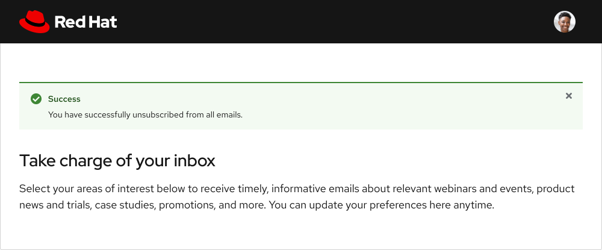
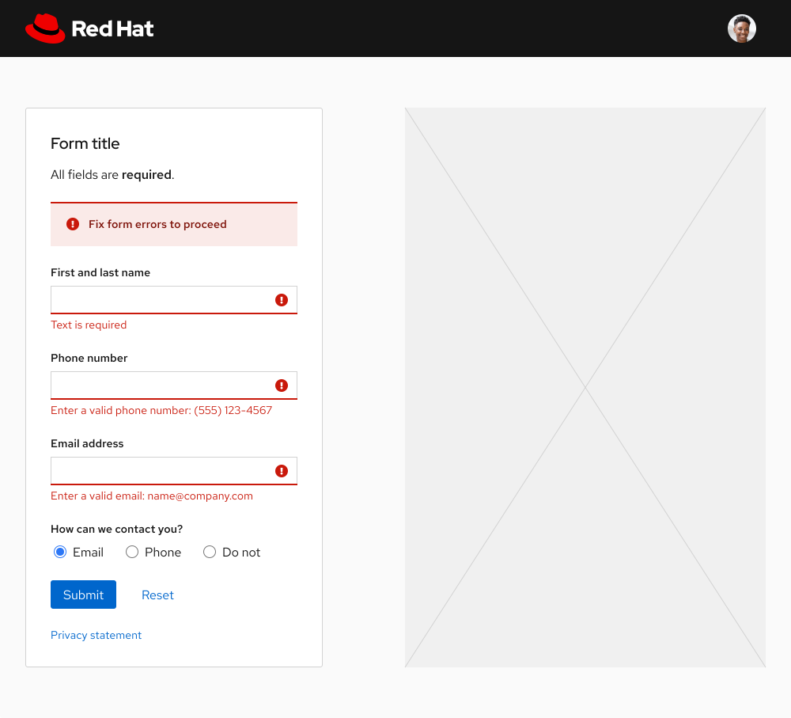
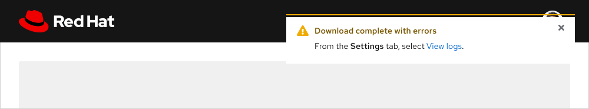
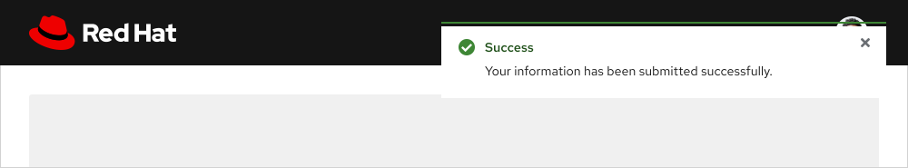

Alert
An alert is best used to notify a user of a change or attract their attention about other messages.
Inline
An Inline alert is used to present a local message or return feedback as the result of a user action, like if a form is submitted with errors.
Toast
A Toast alert is used to present a global message about an event, update, or confirmation, like the result of a user action that cannot be presented within a specific layout or component.
Severity
Severity communicates the urgency of a message and is denoted by various styling configurations.
- Default - Indicates generic information or a message with no severity.
- Info - Indicates helpful information or a message with very little to no severity.
- Success - Indicates a success state, like if a process was completed without errors.
- Warning - Indicates a caution state, like a non-blocking error that might need to be fixed.
- Danger - Indicates a danger state, like an error that is blocking a user from completing a task.
Learn More
Visit the Color foundation page to learn more about how to use colors for status and severity.
Dismissal
Alert variants have different rules regarding their ability to be dismissed by a user.
- Default, Info, and Success Inline alerts can be dismissed by a user selecting the close button.
- Warning and Danger Inline alerts can be dismissed by a user resolving the issues caused by the alert.
- All Toast alerts can be dismissed by a user selecting the close button or waiting for them to time out.
Note:
If an issue cannot be resolved on the current page or if a user needs to correct a situation outside of the experience, use a Modal dialog instead.
Positioning
Inline
An Inline alert can be placed toward the top of a layout if the message applies globally or inline near specific content if the message applies locally. Depending on where they are used, an Inline alert can span the width of a grid or container, so there is no set width.


Toast
A Toast alert slides in from the top right edge of the screen and overlaps any content underneath. They can be set as persistent or temporary depending on the message that needs to be communicated to a user.
- Persistent - Set if the content will be relevant after a task is complete.
- Temporary - Set if the content will be be acknowledged and no longer relevant.
If a Toast alert is set to persistent, a close button needs to be included so a user can dismiss the alert if desired.

If a Toast alert is set to be temporary or time out, the alert will disappear after eight seconds. A user might want to dismiss the alert before then, in which case a close button needs be included.

Behavior
Stacking
When multiple Toast alerts are triggered around the same time, they will stack on top of each other. The most recent alert is placed at the top of the stack and pushes the other alerts down. When stacked Toast alerts are dismissed by a user or time out, the remaining alerts will slide up and fill the empty space.
Interaction States
The close button and any linked content are the only interactive elements in both alert variants.
Link
Hover

Focus
Active